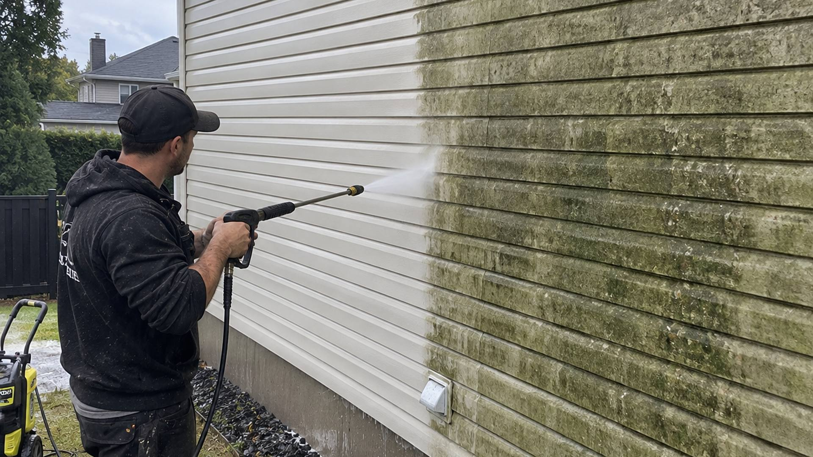
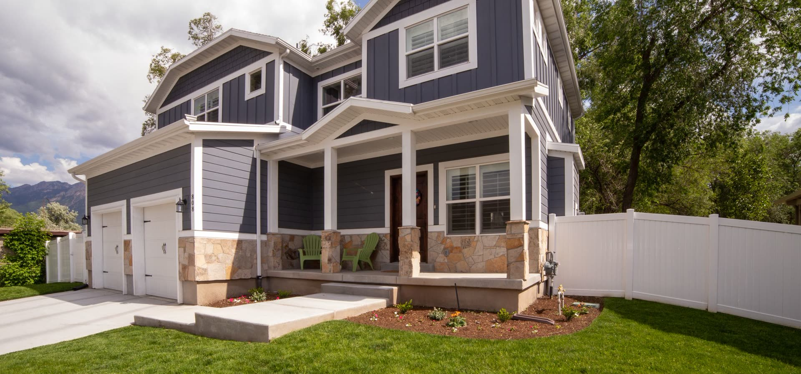

Des gouttières propres avant le gel.
Entretien extérieur à Sherrington et sur la Rive-Sud : gouttières, lavage à pression, vitres et feuilles. Soumission écrite et gratuite.


Une vraie job, du début à la fin
Avant
Feuilles, aiguilles et boue : l'eau ne passe plus et déborde sur le fascia.
Pendant
On vide à la main, on retire la boue au fond, puis on rince jusqu'aux descentes.
Après
L'eau s'écoule, la maison est prête pour l'hiver. Et le terrain reste propre.
Ce que nous faisons
Cinq services d'entretien extérieur, pour les maisons, les plex et les petits commerces.
 Avant → après
Avant → après

Nettoyage de gouttières
Nous vidons les feuilles, retirons la boue et rinçons les descentes pour que l'eau s'écoule avant l'hiver.
Dès 200 $ Voir le détail Avant → après
Avant → après

Protège-gouttières
Grillage en aluminium posé sur vos gouttières existantes pour limiter l'accumulation de feuilles.
Dès 650 $ Voir le détail Sale → propre
Sale → propre
Lavage à pression du revêtement
Vinyle, aluminium ou brique : nous enlevons la moisissure, le vert et la saleté accumulés.
Dès 250 $ Voir le détail ▶ En action
▶ En action
Lavage de vitres extérieures
Fenêtres du rez-de-chaussée jusqu'au 3e étage, sans que vous ayez à sortir l'échelle.
Dès 150 $ Voir le détail ▶ En action
▶ En action
Ramassage de feuilles et fermeture de terrain
Ratissage, soufflage et ramassage pour maisons, blocs appartements et petits commerces.
Dès 175 $ Voir le détailBesoin de plusieurs services?
Combinez-les dans une même visite : une seule soumission, un seul déplacement.
Nos jobs, ville par ville
Choisissez votre ville, puis glissez la poignée pour comparer.
Photo d'une de nos jobs.
Voir la page SherringtonLe travail bien fait, sans surprise
Un prix mesuré
Votre soumission est calculée au pied linéaire, au pied carré ou à la fenêtre. Vous savez exactement ce que vous payez avant qu'on commence.
À l'aise en hauteur
Deuxième ou troisième étage, nous travaillons en échelle tous les jours. Vous n'avez pas à grimper sur votre toit.
Un terrain propre
Feuilles, boue et débris repartent avec nous. Vous retrouvez votre terrain comme s'il ne s'était rien passé.
Garantie satisfaction 30 jours
Si une gouttière que nous avons nettoyée déborde, ou si vous n'êtes pas satisfait d'un lavage, on revient gratuitement dans les 30 jours. Sans discussion.

Une maison se protège par ses détails.
Une gouttière qui coule bien, un revêtement propre, un terrain prêt pour l'hiver.
Samuel Michea, fondateur
Quatre étapes, c'est tout
Vous nous écrivez
Par le formulaire ou par téléphone, avec l'adresse et le travail à faire.
Vous recevez un prix
Nous évaluons le travail et vous envoyons une soumission écrite.
Nous faisons le travail
À la date convenue, et nous laissons le terrain propre.
Vous payez à la fin
Facture par courriel. Virement Interac, comptant ou chèque.
Où nous travaillons
Sherrington, Napierville, Saint-Rémi, Châteauguay, La Prairie, Candiac et les environs. Vous êtes un peu plus loin? Appelez-nous, nous regardons ça ensemble.
services d'entretien extérieur, un seul entrepreneur.
étage : la hauteur maximale à laquelle nous travaillons.
surprise sur la facture : le prix est écrit d'avance.
c'est le délai que nous visons pour vous répondre.

Parlons de votre maison.
Décrivez-nous le travail, nous vous revenons avec un prix écrit.